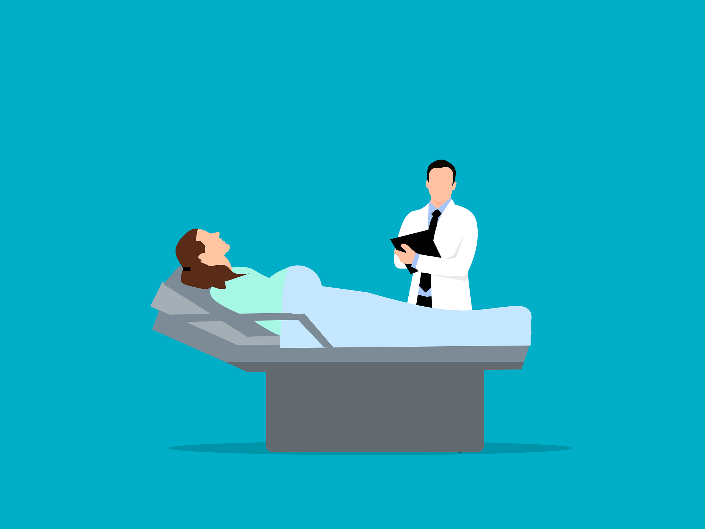

EMDR Trauma Therapy Singapore is a specialized, evidence-based approach designed to help individuals process and heal from traumatic experiences. By using guided bilateral stimulation, this therapy enables the brain to reprocess distressing memories, reducing their emotional impact. Many individuals turn to EMDR Trauma Therapy Singapore to overcome challenges such as PTSD, anxiety, and unresolved emotional trauma, gaining a renewed sense of control and clarity in their lives.
Choosing EMDR Trauma Therapy Singapore provides access to trained therapists who create a safe and supportive environment for healing. Unlike traditional talk therapy, EMDR focuses on reprocessing memories at a neurological level, which can accelerate recovery and produce long-lasting results. This approach is particularly effective for trauma survivors who need a structured, targeted pathway to mental wellness.
With EMDR Trauma Therapy Singapore, clients can experience meaningful improvements in emotional regulation, mental clarity, and overall well-being. The therapy empowers individuals to replace negative thought patterns with healthier responses, enabling them to move forward with confidence. Singapore offers a growing number of qualified EMDR practitioners, making this transformative therapy more accessible than ever.
EMDR (Eye Movement Desensitization and Reprocessing) is a structured, evidence-informed approach that helps the brain process distressing memories differently. In Singapore, trained clinicians follow standardized protocols to address the lasting impact of traumatic experiences. Sessions emphasize stabilization first, then memory processing with bilateral stimulation such as guided eye movements, taps, or tones. The aim is to lessen emotional distress and strengthen more adaptive beliefs about the self and the event.
An initial consultation clarifies your history, goals, and readiness for EMDR. Your therapist will identify target memories and build coping resources before beginning sets of bilateral stimulation. You will pause regularly to notice thoughts, images, emotions, and body sensations, adjusting the pace to maintain safety. Session length and frequency are planned collaboratively to fit your needs.
EMDR may be helpful for people experiencing lingering effects of accidents, interpersonal trauma, medical procedures, grief, or workplace incidents. It can be adapted for teens and adults, with careful screening for suitability. Potential benefits include reduced reactivity to triggers, improved sleep, and a greater sense of control. It is often integrated with complementary therapies, skills training, or community supports.
Look for practitioners with recognized EMDR training and ongoing supervision. In Singapore, professional registration and clear information about EMDR credentials and experience with your concerns can guide your choice. Ask about their approach to stabilization, informed consent, and cultural sensitivity. A brief consultation can help you gauge rapport, communication style, and treatment fit.
Eye Movement Desensitization and Reprocessing uses bilateral stimulation to help the brain reprocess distressing memories and reduce their emotional charge. In Singapore, therapists adapt EMDR within local clinical standards and multicultural considerations. Sessions follow an eight-phase protocol that builds safety, targets memories, and installs more adaptive beliefs.
EMDR can help people experiencing lingering effects from accidents, medical events, loss, or interpersonal harm. It is used for PTSD and trauma-related anxiety, and may also support recovery from cumulative stress. Suitability depends on stability, coping resources, and collaborative readiness, which your therapist will assess.
Your initial appointment typically includes a thorough history, goal setting, and discussion of how EMDR works. The therapist will teach grounding skills and create a plan for targets so you feel prepared before processing begins. You will talk about pacing, consent, and how to pause or slow down at any time.
Look for practitioners with EMDR-specific training and certification, along with licensure in psychology, counselling, or psychiatry. Ask about experience with your concerns, supervision, and how they tailor EMDR for cultural and language needs. Practical considerations like location, telehealth options, fees, and scheduling also matter.
Many clients report reduced reactivity, clearer thinking, and improved daily functioning as processing unfolds. Temporary emotional activation can occur, and therapists provide coping strategies and check-ins to keep work within your window of tolerance. Aftercare may include skills practice, integration sessions, or referrals to local supports if needed.
EMDR (Eye Movement Desensitization and Reprocessing) is an evidence-based psychotherapy that uses bilateral stimulation (such as guided eye movements, taps, or tones) to help the brain reprocess traumatic memories. It reduces distress, triggers, and negative self-beliefs while strengthening adaptive coping, and is commonly used for PTSD, single-incident and complex trauma, and trauma-related anxiety.
Sessions include assessment and treatment planning, stabilization skills (e.g., grounding), memory processing with bilateral stimulation while recalling aspects of a target event, and closure. Appointments usually last 60–90 minutes, weekly or fortnightly. Many clients with single-incident trauma complete core processing in about 6–12 sessions; complex histories may require more. Pace is individualized, and telehealth options may be available.
Look for EMDR-trained or certified clinicians (via recognized EMDR training bodies) who are licensed psychologists or SAC-registered counsellors. Ask about experience with your concerns, safety planning, cultural/language fit, and aftercare. Fees commonly range around SGD 180–300+ per 60–90-minute session; some insurance or employer benefits may reimburse. To learn more or enquire, visit https://s3.us-east-005.dream.io/wellness-care/index.html.